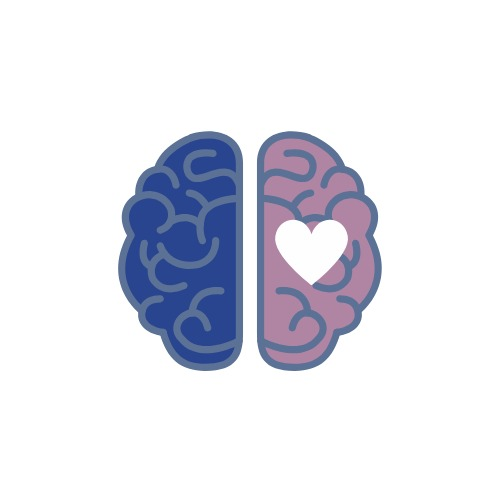

Gabriela Paraday empieza a trabajar tu cuerpo como un sistema completo para tu sanación.
El Mentoring Ontológico de Salud y Bienestar es un proceso de acompañamiento profundo donde trabajamos: ✔ cuerpo ✔ mente ✔ emociones ✔ hábitos Para generar cambios reales, sostenibles y coherentes. No es solo información. Es integración.
Mentora ontológica de salud y bienestar y profesora de yoga. Acompaño a personas que llevan tiempo buscando mejorar su salud y bienestar, pero sienten que algo no termina de cambiar, a transformar la forma en la que entienden su cuerpo, sus emociones y sus hábitos.
Mi enfoque integra el trabajo consciente sobre la mente, el cuerpo y la emoción, abordando la salud desde una mirada profunda y sistémica.
A través de procesos personalizados, te guío a salir del piloto automático, comprender lo que realmente está ocurriendo en tu biología y empezar a construir cambios reales, sostenibles y coherentes con tu vida. 🧠 conciencia 🧘♀️ cuerpo 💭 emoción Porque sanar no es solo físico… es un proceso completo.
Acompañamiento profundo para transformar tu salud desde la raíz.
Movimiento consciente para equilibrar cuerpo y sistema nervioso.
Transformación de hábitos para construir salud real.
Si sientes que es momento de dejar de buscar soluciones externas y empezar a construir tu salud desde dentro…
Aquí no eres un paciente pasivo.
👉 Eres el protagonista.
Aprenderás a:
✔ Entender tu cuerpo
✔ Tomar decisiones conscientes
✔ Sostener hábitos reales
✔ Construir salud desde dentro
Este proceso aborda la salud como un sistema interconectado, trabajando diferentes rutas biológicas para recuperar el equilibrio del cuerpo.
Si sientes que es momento de comprender realmente lo que ocurre en tu cuerpo, puedes escribirme.